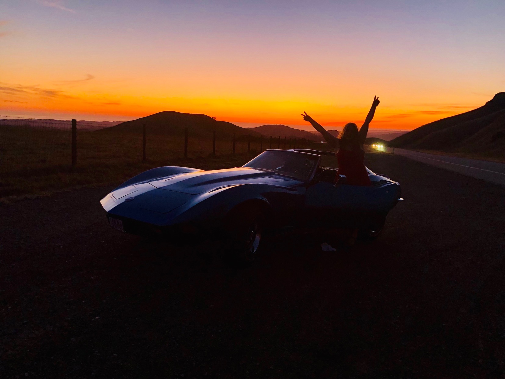
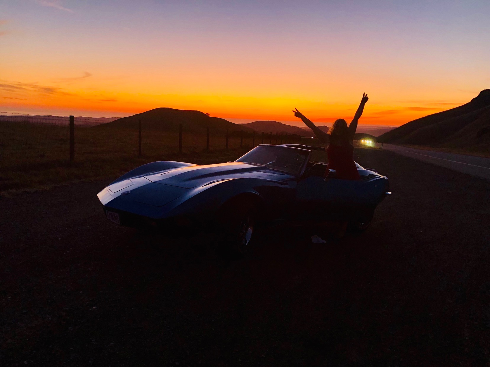

Lab 6: Arrays and Objects
For this lab we had to explore JavaScript arrays and objects first in the console in our browser and then in Atom with our partner.
Challenges
I experienced several problems with typos in my lab.js file. I forgot commas and placed semi-colons in their place instead, but after locating the issues I corrected the errors. I am learning that proofreading is esential in programming and you have to be detailed and diligent in your code.
Results
Since this project is based on transportation I decided to add a cute photo of Callie, my dog, next to my bike. She absolutely loves running alongside while I bike. The other photo is of my grandpa's Stingray that I occasionally take drives to the beach. Although, I sadly haven't been able to do that in a while. There is a photo of my Main Ride on my Lab 5 page.